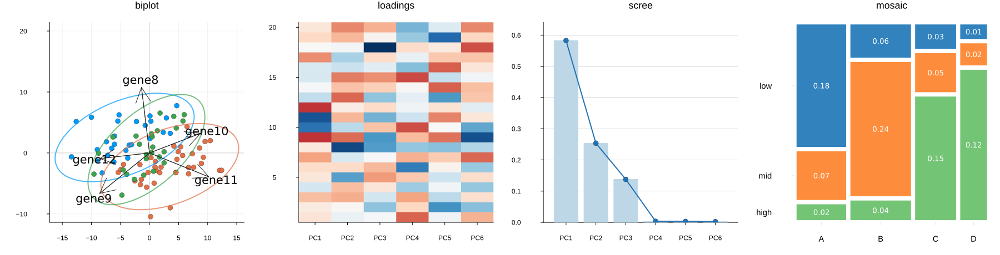

BigRiverPlots


Description
BigRiverPlots.jl is a collection of plotting recipes designed for statistical visualizations.

The package is built using RecipesBase.jl. Its recipes remain lightweight and use Plots.jl as a compatible plotting backend. To render and display these recipes, users must also load the Plots.jl package.
The plotting recipes are not tied to a particular statistical model or Julia package. They operate directly on common model outputs, such as scores, loadings, and explained variances.
Consequently, the plots can be used with any statistical method or decomposition that produces the required inputs.
Available Plots
BigRiverPlots.jl currently provides the following visualizations:
- Biplot — displays observations and variable loadings on the same coordinate system.
- Confidence plot — displays uncertainty regions around observations or group means.
- JIVE variance plot — summarizes the joint, individual, and residual variation for each data block.
- Loadings heatmap — displays variable loadings across multiple components.
- Loadings plot — shows the contribution of each variable to a selected component.
- Mosaic plot — represents a contingency table using tiles with areas proportional to cell frequencies.
- Pairs plot — displays pairwise relationships among several components.
- Predicted versus observed plot — assesses the fit of a regression or prediction model.
- Scores plot — displays observations in the space defined by two components.
- Scree plot — shows the variance explained by each component.
- Sparsity plot — shows the number of variables retained in each component.
- VIP plot — displays Variable Importance in Projection scores from a projection-based model.
Installation
The BigRiverPlots package can be installed by running:
using Pkg
Pkg.add("BigRiverPlots")or from the Julia REPL, press ] to enter pkg mode, and execute:
add BigRiverPlotsFor the most recent (development) version, use:
using Pkg
Pkg.add(url = "https://github.com/senresearch/BigRiverPlots.jl", rev="main")Contributing
We welcome contributions that improve documentation, performance, testing, and functionality. Users can contribute by opening an issue or submitting a pull request.
Questions
If you have questions about contributing or using BigRiverPlots package, please communicate with the authors via GitHub.